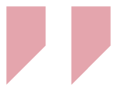

Atualmente, trabalho em uma agência de publicidade como Designer Pleno. Participei da criação de campanhas publicitárias, identidade visual, edição de vídeos e animações e na produção gráfica de produtos, como cartazes e banners. Com mais de 5 anos de experiência, estou sempre em busca de novos desafios e de desenvolvimento técnico, estudando tendências e novidades do mercado.
Nayla Mayara
Olá, tudo bem? Eu sou a Nayla, seja muito bem-vindo ao meu site.
Sou formada em Publicidade e Propaganda pela UNISANTA (Universidade Santa Cecília) e atuo profissionalmente na área de Design Gráfico.
Em meus trabalhos, busco transformar as ideias dos clientes em grandes projetos, sempre seguindo conceitos da profissão e a partir dos briefings elaborados.
Principais Informações
Sobre


O que faço
Atividades
-

Web Developmnet
Web design is a similar process of creation, with the intention of presenting...
-

Brand Identity
Web design is a similar process of creation, with the intention of presenting...
-

Creative Design
Web design is a similar process of creation, with the intention of presenting...
-

Adobe Illustrator
Web design is a similar process of creation, with the intention of presenting...
-

Adobe Photoshop
Web design is a similar process of creation, with the intention of presenting...
-

Social Media
Web design is a similar process of creation, with the intention of presenting...
Acredito bastante que sempre há espaço para aprender cada vez mais, principalmente com o trabalho em grupo compartilhando conhecimento com o restante da equipe.
Photoshop95%
Illustrator70%
After Effects60%
Premiere85%
InDesign85%
Principais Projetos
Portfolio



Resumo Profissional
Experiência
-

2009 - 2013
University of Chicago
Luego de asesorar a emprendedores y emprendimientos por años, lancé este website para formalizar mi relación con potenciales emprendedores y emprendimientos.
-
2006 - 2009
Christofer College
Luego de asesorar a emprendedores y emprendimientos por años, lancé este website para formalizar mi relación con potenciales emprendedores y emprendimientos.
-
1996 - 2006
Secondary School
Luego de asesorar a emprendedores y emprendimientos por años, lancé este website para formalizar mi relación con potenciales emprendedores y emprendimientos.
-

2018 - Current
Web Developer
Luego de asesorar a emprendedores y emprendimientos por años, lancé este website para formalizar mi relación con potenciales emprendedores y emprendimientos.
-
2015 - 2018
App Developer
Luego de asesorar a emprendedores y emprendimientos por años, lancé este website para formalizar mi relación con potenciales emprendedores y emprendimientos.
-
2013 - 2015
Ui/Ux Designer
Luego de asesorar a emprendedores y emprendimientos por años, lancé este website para formalizar mi relación con potenciales emprendedores y emprendimientos.
Vamos Conversar